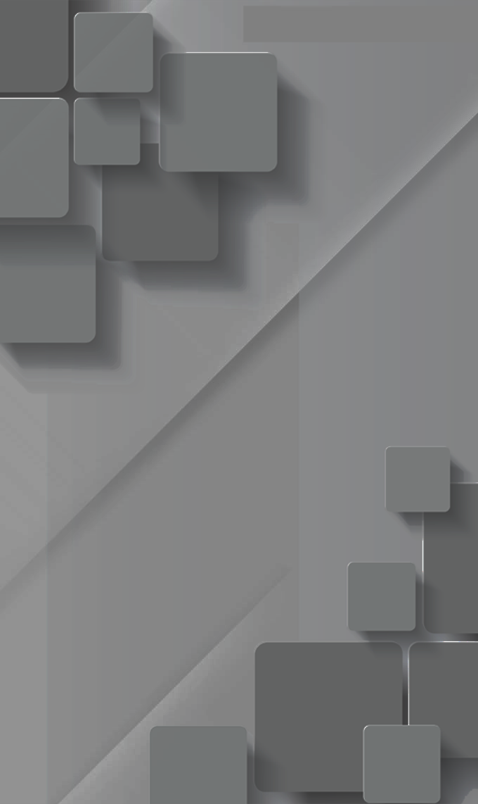

Місто: Київ
Вік: 28 років
Стать: чоловіча
Загальна інформація

Бажана посада: шеф-редактор
Заробітна плата: 45 000 грн
Тип зайнятості: повна зайнятість
Вміння та навички
Неспеціалізовані:
Креативність, уміння працювати в команді, високий рівень тайм
менеджменту, критичне мислення, стратегічне бачення,
організованість.
Технічні:
OpenMedia, Dalet Plus, MS Word, Premiere Pro, Final Cut.
Освіта
Луганська державна академія культури та мистецтв.
Бакалавр кіно-, телемистецтв
Досвід роботи:
Керівник проектів "Свідок.Субота", "Правда життя"
НТН (Медіа/ЗМІ) Листопад 2020 - теперішній час
Розробка концепції проекту та моніторинг її дотримання,
організація роботи редакції, постановка завдань та контроль їх
виконання, аналіз результатів телеперегляду та адаптація
контенту під запит аудиторії, опрацювання та вибір тем зі
сценарною/журналістською групою, вичитування та написання
сюжетів, контроль монтажу на всіх етапах виробництва та
створення міжпрограмного промо продукту.
Спеціальний кореспондент програми "Гроші"
1+1 (Медіа/ЗМІ) Серпень 2014 - лютий 2020
Пошук тем для журналістських розслідувань, розробка синопсису,
обробка доказової бази, робота з відкритими базами даних та
власними інсайдерами, фактчекінг, управління знімальним
процесом, робота в кадрі, написання та начитування сюжетів,
контроль монтажу відзнятого матеріалу.
Кореспондент, ведучий ранкового випуску новин
ЛОТ (Медіа/ЗМІ) Березень 2014 - червень 2014
Пошук тем, зйомка з місця подій, написання сюжетів, монтаж
знятих матеріалів, написання підводок, ведення ранкових випусків
новин. Ведучий ефіру, редактор Радіо "Пульс-FM" (Медіа/ЗМІ)
Жовтень 2012 - березень 2014 Робота у прямому ефірі ФМ
радіостанції, написання програм, підготовка плей-листів,
контроль якості ефіру.